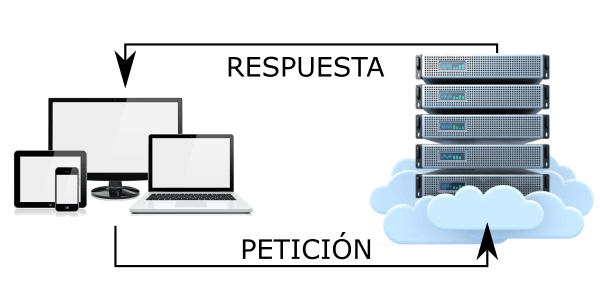

¿Qué es el alojamiento WEB?
El alojamiento web, también conocido como hosting, es un servicio que permite a los usuarios almacenar los archivos y datos de su sitio web en un servidor para que sea accesible a través de internet. Es como alquilar un espacio en un edificio donde se guarda toda la información de tu sitio web para que otros puedan visitarlo.

ALOJAMIENTOS WEB GRATUITOS
Ofrecemos una variedad de servicios para ayudar a nuestra comunidad, incluyendo opciones para que tu sitio web esté en línea. Los **alojamientos web gratuitos** son un excelente punto de partida para proyectos personales o para aprender, aunque suelen tener ciertas limitaciones.
Opciones de Alojamiento Web
Gratuitos (Ideales para empezar o proyectos pequeños):
- 000webhost (de Hostinger): Genial para principiantes, soporta PHP y MySQL. Ofrece un buen equilibrio entre características y gratuidad, sin anuncios forzados en tu sitio.
- InfinityFree: Promete alojamiento "totalmente gratuito para siempre", con recursos generosos para sitios personales y pequeños.
- Netlify: Perfecto para sitios web estáticos (HTML, CSS, JS, frameworks), con despliegue rápido y directamente desde repositorios de Git.
- GitHub Pages: Ideal para documentar proyectos, portafolios o sitios de código abierto, directamente desde tu repositorio de GitHub.
De Pago (Recomendados para proyectos serios y profesionales):
Si buscas fiabilidad, mayor rendimiento, escalabilidad, soporte técnico dedicado y tu propio dominio, un servicio de pago es la mejor inversión.
- Hostinger: Ofrece una excelente relación calidad-precio, con planes optimizados para WordPress y una interfaz de usuario muy intuitiva.
- SiteGround: Conocido por su rendimiento superior, seguridad robusta y un soporte al cliente de primera clase, ideal para proyectos exigentes.
- Bluehost: Una opción popular y recomendada oficialmente por WordPress.org, fácil de usar para principiantes.
- Raiola Networks: Para usuarios en España y Latinoamérica, ofrece buen rendimiento y soporte en español.
Evalúa tus necesidades para elegir la opción que mejor se ajuste a tu proyecto. Los servicios de pago ofrecen un control y rendimiento mucho mayores a medida que tu sitio crece.
Contacto
Puedes contactarnos a través de nuestro correo electrónico: contacto@pginformativa.com